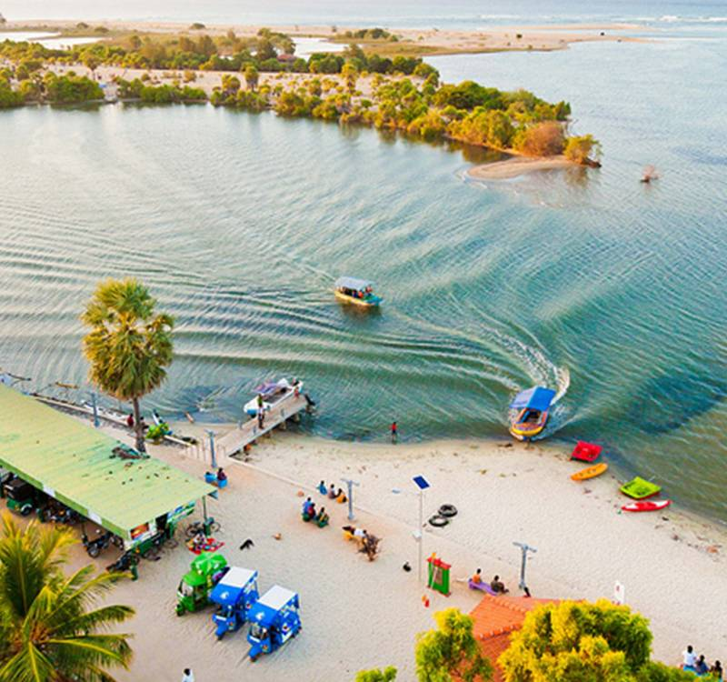

Discover the beauty of Sri Lanka's Eastern Coast
Nestled on the eastern coast of Sri Lanka, Batticaloa is a charming city known for its tranquil lagoons, pristine beaches, and rich cultural heritage. From ancient temples and Dutch forts to breathtaking beaches and unique marine life, Batticaloa offers a truly authentic Sri Lankan experience away from the crowded tourist trails.
Whether you seek solace at the serene Buddhist temples & Hindu kovils or explore the mysteries of the Batticaloa Lagoon, there is no shortage of meaningful experiences in this unique destination. Discover the "Land of the Singing Fish" and immerse yourself in the natural beauty and cultural richness of this hidden gem.
Discover beautiful sandy beaches and calm waters perfect for swimming and relaxation.
Explore ancient temples, churches, and historical sites that tell the story of Batticaloa.

Experience the famous Batticaloa Lagoon with boat tours and the legendary "singing fish".